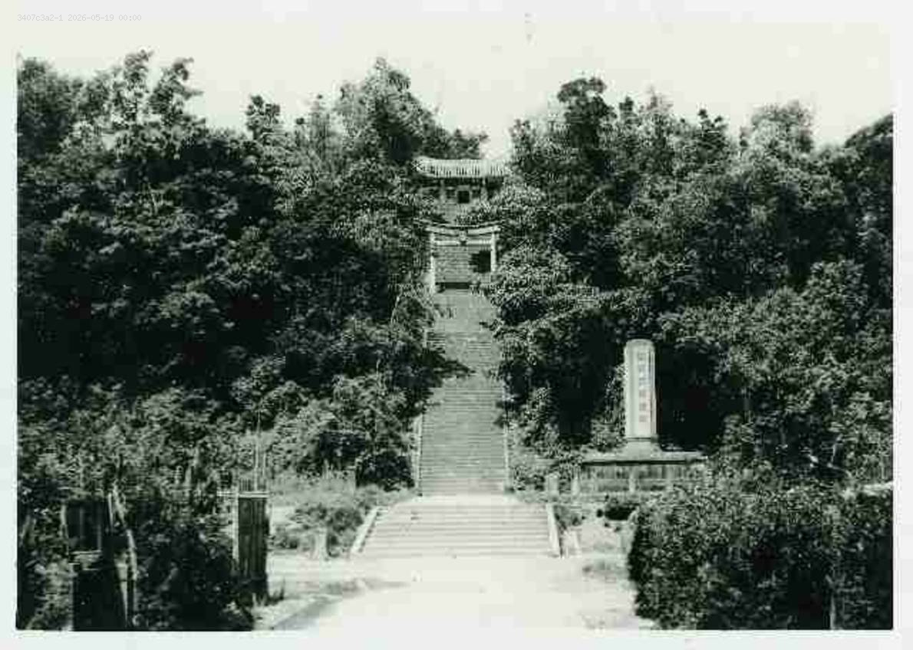

點擊任意處還原縮小
日治時代，宜蘭每座山丘都曾有神明守護。
戰後，它們靜悄悄消失了——
有的埋在土裡，有的你每天路過卻不知道。
蘭陽神域 ── 宜蘭三神社地理探究
宜蘭在日治時期（1895–1945）先後建立了三座神社——員山神社（1906年，今員山公園）、羅東神社（1917年，今中山公園附近）、蘇澳神社（1940年，今蘇澳國中）。這三座神社如今均已拆除或改建，地面上的遺蹟所剩無幾，卻各以不同方式在各地留下了痕跡。
神社不只是宗教場所，更是殖民統治者在空間上宣示權力的工具。它們的選址、朝向、與聚落的相對位置，都反映了日本帝國對蘭陽平原的地理與管理邏輯。而戰後政權轉移，這些「帝國神聖空間」沒有一座維持原貌——它們的命運折射出空間意義如何隨政治與都市發展而被重新詮釋。
我們以宜蘭三神社為例子，進行雙軸地理探究：一方面分析日治時期的選址邏輯，另一方面追蹤戰後的空間轉化過程，嘗試理解「殖民地景的生產」與「地景的去殖民化」在宜蘭的具體樣貌。
日治時期宜蘭三神社的選址邏輯為何？
神社的空間配置如何體現殖民統治的地理意圖？
• 各神社與當時聚落核心的相對位置關係（邊緣制高 vs. 融入日常）
• 神社選址與地方產業、交通或軍事設施的空間連結
• 地形條件（山麓、高地、臨海）如何服務「俯視」的殖民凝視
光復後，神社的神聖空間如何被改造為世俗空間？
三社各自的轉化模式有何異同？
• 空間功能的轉換類型（公園化、教育化、道路化）及其背後的決策邏輯
• 不同轉化模式的地理成因（都市擴張、土地政策、地方需求）
• 現存遺構的留存與遷移，反映了什麼樣的集體記憶選擇？
「差異化選址邏輯」
日治時期蘭陽三神社並未採取單一選址模式，而是依聚落性質呈現差異化空間配置——行政核心（宜蘭）採「高地凝視」型，藉俯瞰強化權威；產業重鎮（羅東）採「機能伴生」型，緊鄰太平山林業集散區；軍港要塞（蘇澳）採「海防鎮守」型，背山面海守護港口。三者共同遵循「位於聚落邊緣、扣連地方命脈」之原則。
「神聖空間的三軌轉置」
戰後政權轉移並未產生單一的「去日本化」結果，而是呈現三種並行軌跡——(1) 神聖性覆寫：以中華民族敘事接管原有的紀念性空間（宜蘭神社→忠烈祠）；(2) 公共性轉用：神聖空間被世俗化為日常設施（蘇澳神社→國中校園）；(3) 都市性消解：原址被吸納入都市路網，遺構作為記憶碎片散落於現代地景（羅東神社→純精路與中山公園）。三軌並行折射出戰後台灣空間文化的「雜揉性（雜交性）」，而非乾淨的政權替換。
以下三點為研究限制，不空口而談才能呈現真實性。
案例代表性的天花板
這次我們只選了員山、羅東、蘇澳三座神社來實察，無法呈現宜蘭縣日治神社的全貌。礁溪、頭城同樣設有神社，其選址邏輯與戰後命運各有其地方故事——礁溪溫泉觀光的發展史、頭城海岸線的開拓背景——均未納入比較。因此，「差異化選址邏輯」假說目前仍屬初探性質，還不足以過度推斷。
「由上而下」的詮釋視角
戰後空間轉置的分析，我們主要依賴文獻史料、地圖比對與實地踏查，缺乏在地民眾的口述訪談。這代表著這次的「三軌轉置」論述，是我們從外部施加的分類，並未能呈現當年居民如何實際經歷、詮釋或甚至抵抗這些空間轉變。若要補全此缺口，需要訪談對日治時期尚有記憶的地方耆老，以及後代對這些地景變遷的感知調查。此外，日治時期原始地籍圖取得有限，部分選址分析仰賴二手文獻，羅東神社田野調查亦以遷置遺物為主。
倖存者偏差：消失的才是多數
田野調查所能觀察到的，只有「留存下來的」——石燈籠基座、移置的狛犬、殘存的參道階梯。然而更多的神社遺跡，早已在道路開闢、建築改建或政治性清除中消失，我們對這些「不可見的遺失」幾乎無從下手。這提醒我們：所有基於現存遺構的空間論述，都是建立在僅存的碎片上重建，而非完整歷史現場的還原；沉默的廢墟，也是一種史料。
▸ 從公園入口到忠烈祠牌坊：階梯約 74 級，高差目測 15–18 m。原神社參道走向大致保留，石材有局部修補。
▸ 銅馬一對仍在原位，底座有「昭和十四年」字樣，表面已重新噴漆（深咖啡色）。
▸ 與現場老伯聊：「以前小時候這裡叫神社，後來就換牌子了，我們還是一樣來拜。」
▸ 純精路路段：地面上完全無任何遺構標誌，詢問路人皆不知此處曾為神社原址。
▸ 中山公園：找到移置的石燈籠 2 座（底部有裂縫，應是遷移時損傷），狛犬 1 對，基台有水泥修補痕跡。
▸ 向公園管理員確認：遺物係約民國 60 年代由地方仕紳主導遷入，無正式文件記錄。
▸ 校園圍牆外可見地勢明顯高於周邊街道約 3–4 m，疑為原神社台基的土方遺留。
▸ 未獲進入校園許可，無法確認有無地面遺構。校方不知有神社歷史。
▸ 從制高點遠望：蘇澳港灣盡收眼底，「海防鎮守」假說在現場視覺上得到直觀支持。

Site 01
現址：員山鄉 員山公園
Site 02
現址：羅東鎮 中山公園
Site 03
現址：蘇澳鎮 蘇澳國中旁
COMPARATIVE GEOGRAPHIC ANALYSIS
＊銅馬與狛犬（員山）均為戰後重製複製品，非日治時期原物
| 神社名稱 | 社格 | 建立年 | 主祀神明 | 選址地形特徵 | 產業╱軍事關聯 | 戰後空間轉置 | 現存遺構 |
|---|---|---|---|---|---|---|---|
| 宜蘭神社 | 縣社 | 1906年 （1919年遷建員山） |
天照大神、北白川宮能久親王、開拓三神 | 員山山麓高地（神社平台標高約30米，山丘最高點海拔43公尺） | 連結宜蘭農業平原行政核心，為在台日人主要精神寄託場所 | 改建為宜蘭縣忠烈祠（神聖性延續），參道與空間格局大致保留 | 參道石階、捐款芳名柱、石燈籠基座（原物）；銅馬＊、狛犬＊（戰後重製） |
| 羅東神社 | 無格社 | 1937年 | 明治天皇、開拓三神（大國魂命、大己貴命、少彥名命） | 平原沖積扇平地，位於羅東街西側外圍邊緣 | 大量使用太平山上等檜木建造，與林業出張所、鐵道集散區緊密呼應 | 原址拆除開闢為環鎮道路（純精路），遺構移往中山公園（空間碎裂） | 心字池、神橋遺跡、石燈籠、鐵燈籠、狛犬（中山公園） |
| 蘇澳神社 | 無格社 | 1940年 | 明治天皇、北白川宮能久親王 | 七星嶺山腳內側谷地（聖湖里後湖山麓），四周山丘環繞，視野受限，非制高點選址 | 守護蘇澳軍港與漁港，主要服務日本海軍及港口從業人員 | 原址改建為蘇澳國中校舍（完全世俗化），記憶幾近抹除 | 石燈籠基座（蘇澳國中內）、狛犬（晉安宮） |
三座神社在政權轉換後，各自走上截然不同的空間命運
神社改建為忠烈祠，主神與名稱雖換，但參道、階梯、莊嚴空間格局仍完整保留。神聖性以「中華民族烈士」的敘事框架重新詮釋延續，是三社中歷史記憶保存最完整的案例。
神社本體因開闢純精路而徹底消失，但狛犬、石燈籠、鐵燈籠被移置至中山公園。遺構「碎裂」後在新地點「重組」，夾雜在羅東夜市喧囂中，歷史記憶變得破碎且被稀釋。
原址直接興建蘇澳國中校舍，神聖空間被日常教育場所徹底取代，記憶幾乎被抹除。僅校內散落石燈籠基座，以及移至晉安宮的狛犬，成為這段歷史僅剩的線索。
日治時期神社選址並非隨機，而是遵循地理政治的空間邏輯——蘇澳神社的例外，恰恰更凸顯了這套邏輯的複雜性
神社幾乎都選在山丘或高地，從上往下俯瞰聚落。這是一種視覺上的「權力展示」，讓住在下方的人每天抬頭都能看見神社，潛移默化地感受帝國存在。員山神社是最典型的案例。
神社通常設於聚落邊緣或重要入口，象徵帝國守護領土的邊界。羅東神社在街區西側邊緣，與林業鐵道集散區呼應，宣告「這裡是我們的疆域」。
神社選址往往與當地最重要的產業或軍事功能結合。羅東神社以上等檜木建造，是「林業之都」的空間宣示；蘇澳神社則嵌入聚落谷地，靠近軍港行政核心，偏向「社區整合」功能，是三社中選址邏輯最特殊的案例。
GUIDE & COMPARISON
建議從宜蘭火車站出發，搭753公車（約20分鐘）或計程車（約10分鐘）前往員山公園，隨後返回宜蘭火車站搭區間車至羅東火車站（約11分鐘），之後步行至中山公園（約10分鐘），最後再從羅東火車站搭至蘇澳火車站（約18分鐘），下車後建議騎自行車（約5分鐘）至蘇澳國中踏查。
1. 尊重校園：蘇澳神社位於蘇澳國中內，平日上課期間請勿進入，欲入校參觀請避開上課時段或於警衛室報備登記。
2. 莊嚴場所：員山忠烈祠與蘇澳晉安宮為信仰祭祀場所，實地勘查請保持輕聲細語，切勿干擾儀式。
1. 參道仰角：員山公園百階參道底部是最佳對角線仰拍點，呈現神道的空間壓迫感。
2. 細節特寫：特寫員山公園階梯旁石碑的「宜蘭製酒株式會社」商標，能佐證日治時期民間的「獻納」。
從宜蘭火車站轉乘市區公車753或騎車約15分鐘抵達員山公園。實地觀察百階參道階梯，並於平臺尋找由有心人士保存下來的銅馬（複製品，原件存放於文昌宮）與兩側斑駁的狛犬。登上頂部忠烈祠，能居高臨下體會大正年間遷建時「俯瞰蘭陽平原」的地理選址哲學。
羅東神社本體已在1970年代因開闢純精路而遭拆除，遺構移置於熱鬧的中山公園。在這裡可以尋找原神社的神橋、池塘，特別是由昭和製糖株式會社捐獻的「石燈籠」和鐵燈籠，能深刻感受到當時日本資本家在地方殖民宗教中扮演的贊助與宣傳角色。
搭乘火車至蘇澳車站後步行抵達蘇澳國中。由於校舍興建，神社地基砌石多被改建為擋土牆，在校門西側山坡可見殘存石階與石燈籠基座。隨後可步行前往市中心的「晉安宮」，廟埕內保存著原蘇澳神社雕刻極其精緻的石製狛犬，展現了日本殖民宗教遺產在戰後常民廟宇中的異地共存。
宜蘭神社是日治時期蘭陽平原社格最高的神社。初建於宜蘭公園（今中山公園），後因空間不敷使用，於1919年遷建至員山（今員山公園）。此處背倚員山，俯瞰廣闊的蘭陽平原，完美展現了神道教中「神明居於高處庇佑眾生」的空間意涵。
戰後，神社主體建築被拆除，改建為宜蘭縣忠烈祠。然而，漫長的參道階梯依然存在。在公園內，你可以輕易找到由當時地方仕紳捐獻的銅馬（身上刻有社徽痕跡）、狛犬，以及散落的石燈籠基座。這些地理印記，成為我們追溯宜蘭都市發展軸線的重要線索。
宜蘭神社最初設立於宜蘭公園內（今中山公園），以作為在台日人的心靈寄託。
因原址空間不足，遷建至員山（今員山公園），依山傍水，具備神明居高臨下之氣勢。
隨著地方發展與參拜人數增加，社格正式由無格社升格為「縣社」，為蘭陽地區社格最高之神社。
戰後神社主體被拆除，改建為宜蘭縣忠烈祠。百階參道、銅馬與石燈籠基座仍存留至今。
← 拖動滑桿 現今 ／ 日治時期 →

 參道廣場
參道廣場 鳥居上的擬寶珠
鳥居上的擬寶珠 左側贊助遺構
左側贊助遺構 石雕狛犬
石雕狛犬 忠烈祠石碑
忠烈祠石碑 銅馬像（忠烈祠）
銅馬像（忠烈祠） 忠烈祠主殿
忠烈祠主殿 鳥居遺址
鳥居遺址探訪完神社後
附近景點 · 在地小食 · 步行即達
羅東的崛起與太平山林場的開發密不可分。隨著林業帶來的經濟繁榮，當地官民發起興建羅東神社，選址於羅東街的鬧區邊緣（今中山公園）。神社的建立不僅滿足了日人信仰需求，其大量使用上等檜木建造的神殿，更是羅東做為「木材之都」的空間宣示。
今日的中山公園仍是羅東市民的休閒核心，紧邻繁华的羅東夜市。走進公園，雖然木造神社早已不存，但細心觀察便能發現由當時營林所修築的心字池、神橋遺跡。這些水體與地景的配置，保留了日式庭園的地理紋理，是探究羅東都市化歷程中，休閒與信仰空間重疊的最佳案例。
因宜蘭神社距離較遠，地方仕紳與民眾發起，於羅東街西側設立「羅東社」。
配合皇民化運動，新建羅東神社並鎮座，列為無格社，大量使用上等檜木展現林業之都特色。
原神社在戰後改為忠烈祠，後因開闢純精路而拆除，部分遺構移至羅東中山公園。
昔日的心字池、神橋、石燈籠與罕見的鐵燈籠，如今靜靜躺在熱鬧的羅東夜市旁公園內。
← 拖動滑桿 現今 ／ 日治時期 →
 浩然亭與神社狛犬
浩然亭與神社狛犬 狛犬遺構
狛犬遺構 逍遙橋
逍遙橋 羅東神社青銅獻燈
羅東神社青銅獻燈 羅東神社石燈籠
羅東神社石燈籠探訪完神社後
附近景點 · 在地小食 · 步行即達
蘇澳因具備優良的天然港灣，在日治時期被開發為重要的軍港與漁港。蘇澳神社的建立，主要作為當地日本海軍、港口從業人員及居民的精神寄託。神社選址於現今蘇澳國中後方山麓，此處地勢高亢，可俯視整個蘇澳灣，展現了帝國對於海洋與疆界掌控的地理視野。
隨著時代變遷，蘇澳神社的原址已成為學校與民宅的混合區。儘管主體不復存在，但在蘇澳國中周邊的斜坡與巷弄間，探究者仍能發現幾座殘缺的石燈籠基座，以及疑似舊參道的石階。這些隱身於常民生活中的遺構，像是一塊塊地理拼圖，等待我們將其拼湊出港都的歷史原貌。
配合總督府皇民化運動，地方開始籌造蘇澳神社，選址於蘇澳庄糞箕湖字紅湖（今蘇澳國中校址）。
2月8日神社正式鎮座，列為無格社。祭祀明治天皇及北白川宮能久親王，為當地最重要之官方神社。
戰後神社主體遭拆除，原址成為蘇澳國中校舍與社區，原有空間格局被現代建築覆蓋。
如今蘇澳國中校內仍散落數座石燈籠基座；而神社的狛犬與部分石燈籠則被移至晉安宮妥善保存。
← 拖動滑桿 現今 ／ 日治時期 →


探訪完神社後
附近景點 · 在地小食 · 步行即達
以下景點距員山神社遺址步行皆可抵達

員山鄉著名的天然地底湧泉，因泉水從沙地細縫冒出時產生細小氣泡、狀似螃蟹吐泡而得名。水溫長年維持 15–20°C，水質清澈見底，池中可見小魚小蝦，設有戲水池、泡腳區與淋浴間，夏季消暑免費好去處。

藏於員山鄉間小路的禪風寺廟，融合東方與日式元素，園區內有絕美日式庭園造景與落羽松林道。五米高的泥塑大佛已列為宜蘭地區文化資產，入園免門票，清幽靜謐適合沈澱心靈。

台灣第一座威士忌酒廠，利用中央山脈與雪山山脈的純淨水源釀造，品牌「KAVALAN」已銷往全球 70 多個國家，並於 2017 年獲得 IWSC 世界年度蒸餾酒廠冠軍。提供免費導覽與試飲，入場免門票。
以下景點距羅東神社遺址步行或短程即可抵達

昔日太平山木材集散重地，完整保留五分車、貯木池、機械廠房等日治時期林業設施遺址。與羅東神社同屬日治時代的歷史切片，是了解林業都市如何形成的最佳場所，入場免費。


宜蘭最負盛名的夜市，緊鄰昔日神社遺構所在的中山公園。蔥油餅、羊肉爐、奇味紅燒肉等在地風味應有盡有，探索完神社歷史後的最佳慰勞，每晚人聲鼎沸、熱鬧非凡。
以下景點距蘇澳神社遺址步行或短程即可抵達

全球罕見的天然碳酸冷泉，水溫經年維持約 21°C，湧出時帶有細緻氣泡，水質清澈透明可飲可浴。設有男女公共浴池及露天泡腳戲水區，是蘇澳在地居民消暑的秘境聖地。

位於蘇澳交流道旁的親子觀光工廠，以巨大蠟筆超人造型外觀著稱。提供四項手作 DIY 體驗，包含自製彩色蠟筆、彩色筆及人體彩繪，並設有亞洲室內最高的八層樓彩虹溜滑梯，雨天也能盡興遊玩。

建於 1927 年（昭和 2 年）的縣定古蹟，位於蘇澳砲台山上，主祀海上守護神，可俯瞰整個蘇澳港灣。主體建築已不存在，山上仍可見石燈、石柱、石台等神社遺構，空間格局大致完整。
INQUIRY CONCLUSION & SPATIAL REFLECTIONS
透過1921年大正版臺灣地形圖的套疊，我們得以清晰發現，日治時期蘭陽三座神社的選址並非隨機，而是遵循了地理學上的「邊緣與制高（Periphery & Elevation）」空間政治模型：
戰後，隨著日本殖民政權撤出，神社的物理與精神空間經歷了全然不同的地景變遷與再詮釋：
原址改建為「宜蘭縣忠烈祠」，其政治紀念與神聖性以「中華烈士」的敘事框架得以延續，漫長的參道與百階階梯依然完好地保留了空間的莊嚴儀式感。
戰後原址被夷平，完全併入開闢的純精路（道路地景）。雖然神社實體消失，但其遺留的狛犬、鐵燈籠被安置至中山公園內，被熱鬧喧囂的夜市商業氣氛包圍，歷史記憶呈現「異地重組、功能轉換」的拼貼地景。
原神社主體於戰後拆毀，1950年代初期改建為蘇澳國中。原有的地基砌石成了維護校園安全的擋土牆，殖民政權的宗教控制空間，徹底轉化為世俗的教育公共設施。
從都市擴張的角度來看，日治時期的神社皆選定在當時聚落的「郊野邊界」或「山麓邊緣」。在20世紀初，這些高台或外圍林地是人煙稀少的神聖隔離帶。
然而，歷經戰後數十年的都市化進程、外環道（純精路）開闢與市區向外擴張，當年的「邊緣」已全然被吸納為今日的「核心」。羅東神社原址已是交通繁忙的都市動脈，其構件所在的中山公園成了商業最繁華的夜市中心；員山公園也成了常民假日休閒的親子樂園。
這個從「排他的神聖隔離空間」轉變為「包容的常民日常空間」的歷程，深刻揭示了蘭陽平原百年來地景演變的民主化與生活化轉變。
每道題給你一個現地遺構或地景線索。猜猜它屬於哪座神社？答完揭示完整地理分析。